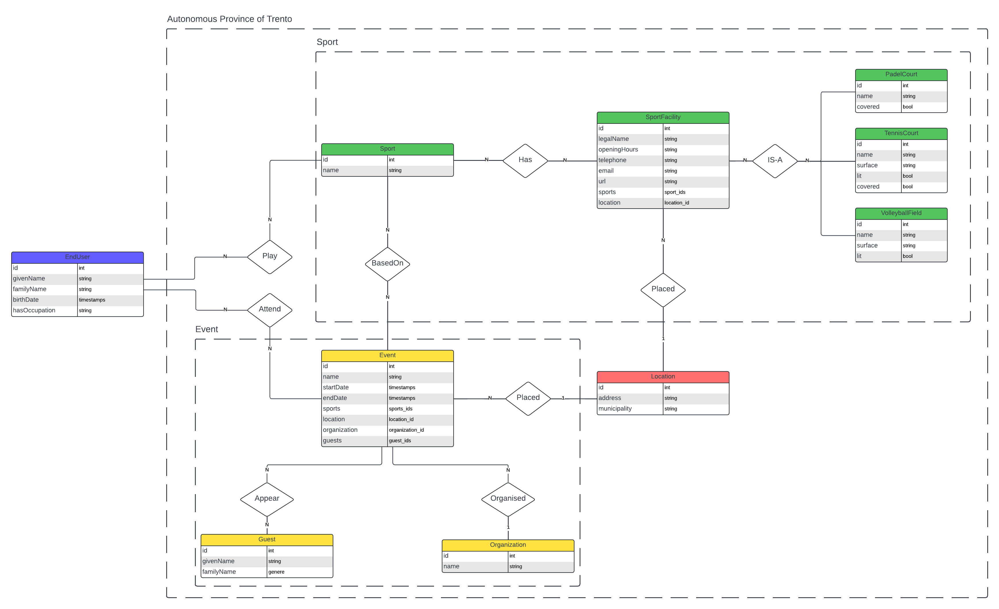
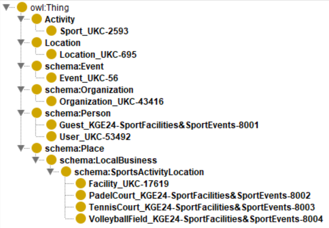
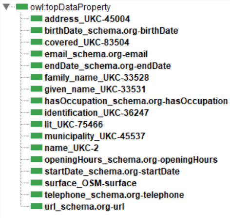
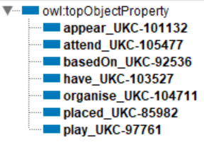
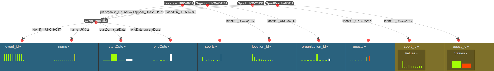

KGE 2024 Project - Sport Facilities & Events in Trentino
Introduction and Materials
This project was developed during the 2024/25 academic year as part of the Knowledge Graph Engineering course. This page provides a detailed description of the work completed by our team, consisting of Mouez Khelifi, Pietro Bologna, Christian Sassi. Below, you can find all the links to the resources utilized for the project.
- The complete GitHub repository
- The full report
- The presentation
- The final KG
1. Project Purpose
Access to sports facilities and events plays a crucial role in improving the quality of life in Trentino Province. Our project focuses on creating a Knowledge Graph to consolidate information about these resources, offering a unified platform for residents, tourists, and local authorities. With this tool, we aim to inspire active lifestyles, foster community engagement, and support informed decision-making. Ultimately, this initiative promotes public health and cultivates a vibrant sports culture in the region
2. Domain of Interest
The Domain of Interest (DoI) defines the geographical and temporal scope of the project. Geographically, it focuses on the Trentino Province, including both urban and rural sports facilities like soccer fields and basketball courts, as well as sports events within the region. Events data includes those from the Festival dello Sport 2024, emphasizing local sports culture. Temporally, the project covers the year 2024, capturing data on sports facilities and scheduled events during this period. This ensures the dataset reflects the current sports landscape of Trentino.
3. ER Model
The ER diagram, which graphically represents the knowledge gathered in the prior stages. This ER diagram provides detailed information for a technician to delve deeper into the project. The diagram is based on the entity types (ETypes) and attributes identified before. The ETypes have been identified to illustrate how the different entities interact within the model, providing a clear and coherent structure for representing information about sports facilities and events in Trentino:
- SportFacility: Represents a facility dedicated to sports, where individuals can participate in various physical activities.
- PadelCourt: A court dedicated to padel, a racquet sport.
- TennisCourt: A court dedicated to tennis.
- VolleyballField: A field dedicated to volleyball.
- Sport: Represents a specific type of sport.
- Event: Represents an organized sports event, including details on participation and scheduling.
- Guest: Represents a guest or participant involved in a sports event.
- Organization: Represents an organization responsible for hosting or coordinating sports events.
- Location: Represents a physical location where sports facilities and events are held.
- EndUser: Refers to the end user who will utilize the service.

4. Information gathering
This section outlines the execution of activities carried out during the Information Gathering phase of the iTelos methodology. The table below provides details on the sources from which the data has been collected.
| Data Source | Description | Access Link |
|---|---|---|
| Overpass Turbo | Tool for querying OpenStreetMap (OSM) data to extract geospatial features like sports facilities. | overpass-turbo.eu |
| OpenData Trentino | Open Data Portal of Trentino offering datasets on transportation, tourism, and public services. | dati.trentino.it |
| Pagine Gialle | Online directory of businesses in Italy, including sports facilities. | paginegialle.it |
| Festival dello Sport | Annual sports event in Trento featuring panels, workshops, and live sports. | ilfestivaldellosport.it |
| Comune di Trento | Official website of Trento’s municipal administration providing public service and event info. | comune.trento.it |
| List of Municipalities | List of municipalities in Trentino province. | GitHub Link |
Here, a summary table of the final datasets.
| CSV file | Description |
|---|---|
| Sport.csv | The file contains the specific type of sport. |
| SportFacility.csv | The file contains the facility dedicated to sports. |
| PadelCourt.csv | The file contains the facility dedicated to padel. |
| TennisCourt.csv | The file contains the facility dedicated to tennis. |
| VolleyballField.csv | The file contains the facility dedicated to volleyball. |
| Event.csv | The file contains the events in the Trentino Province. |
| Guest.csv | The file contains the participant involved in a sports event. |
| Organization.csv | The file contains the organization hosting the events. |
| Location.csv | The file contains the physical location of sports and events facilities. |
| EndUser.csv | The file contains the users who utilizes the service. |
5. Language definition
The Language Definition phase focuses on adapting the language needed to represent the information and relationships in the Knowledge Graph (KG). It ensures concepts align with the project’s goals and accurately represent entity types, attributes, and relationships. Existing ontologies like the UKC, schema.org, and OpenStreetMap are used to identify definitions, and if a concept is missing, a new ConceptID is created. Due to the need for careful review, automation isn’t feasible, as concepts must be evaluated both grammatically and semantically, as shown in the custom definition of “Guest.”
EType concept labels and descriptions:
| ConceptID | Word-en | Gloss-en |
|---|---|---|
| UKC-2593 | sport | An active diversion requiring physical exertion and competition. |
| UKC-17619 | facility | A building or place that provides a particular service or is used for a particular industry. |
| UKC-56 | event | Something that happens at a given place and time. |
| UKC-43416 | organization | The persons (or committees or departments etc.) who make up a body for the purpose of administering something. |
| UKC-695 | location | The persons (or committees or departments etc.) who make up a body for the purpose of administering something. |
| UKC-53492 | user | A person who makes use of a thing; someone who uses or employs something. |
| KGE24-SportFacilities&SportEvents-8001 | guest | Represents a guest or participant involved in a sports event. |
| KGE24-SportFacilities&SportEvents-8002 | padelCourt | A court dedicated to padel, a racquet sport. |
| KGE24-SportFacilities&SportEvents-8003 | tennisCourt | A court dedicated to tennis. |
| KGE24-SportFacilities&SportEvents-8004 | volleyballField | A field dedicated to volleyball. |
Relationships concept labels and descriptions:
| ConceptID | Word-en | Gloss-en |
|---|---|---|
| UKC-85982 | placed | Situated in a particular spot or position. |
| UKC-104711 | organise | Create (as an entity). |
| UKC-101132 | appear | Character on stage or appear in a play, etc. |
| UKC-97761 | play | Participate in games or sport. |
| UKC-105477 | attend | Be present at (meetings, church services, university), etc. |
| UKC-92536 | basedOn | Being derived from (often followed by ‘on’ or ‘upon’). |
| UKC-103527 | have | Have or possess, either in a concrete or an abstract sense. |
Data properties concept labels and descriptions:
| ConceptID | Word-en | Gloss-en |
|---|---|---|
| UKC-36247 | identification | Evidence of identity; something that identifies a person or thing (full form of “id”). |
| UKC-33531 | given_name | The name that precedes the surname. |
| UKC-33528 | family_name | The name used to identify the members of a family (as distinguished from each member’s given name). |
| schema.org-birthDate | birthDate | Date of birth. |
| schema.org-hasOccupation | hasOccupation | The person’s occupation. |
| UKC-2 | name | A language unit by which a person or thing is known. |
| schema.org-startDate | startDate | The start date and time of the item. |
| schema.org-endDate | endDate | The end date and time of the item. |
| UKC-45004 | address | The place where a person or organization can be found or communicated with. |
| UKC-45537 | municipality | An urban district having corporate status and powers of self-government. |
| OSM-surface | surface | Describes the surface of a feature. |
| UKC-75466 | lit | Provided with artificial light. |
| UKC-83504 | covered | Overlaid or spread or topped with or enclosed within something; sometimes used as a combining form. |
| schema.org-openingHours | openingHours | The general opening hours for a business. Opening hours can be specified as a weekly time range, starting with days, then times per day. |
| schema.org-telephone | telephone | The telephone number. |
| schema.org-email | Email address. | |
| schema.org-url | url | URL of the item. |
6. Knowledge definition
The Knowledge Definition phase starts with resources from previous phases, formalized objectives, and acquired data to develop the teleontology for the Knowledge Graph (KG). This involves constructing knowledge resources using established ontologies and data schemas, while supporting data reuse. Tasks are divided into producer and consumer roles: the producer creates interoperable ontologies for individual datasets, while the consumer designs a unified ontology for the composite KG.
6.1 Ontology
This section describes the top-down knowledge definition phase of the kTelos process. The objective is to define a high-level view of the entities involved in the project already aligned with the UKC.
| Source Ontology | Name |
|---|---|
| Schema.org | Event |
| Schema.org | Organization |
| Schema.org | Person |
| Schema.org | Place |
| Custom | Activity |
| Custom | Location |
6.2 Teleology
This section describes the bottom-up knowledge definition phase of the kTelos process, aimed at developing a teleology that aligns with the project’s purpose and data, particularly addressing Competency Questions. Four key integration areas are identified: User, Place, SportFacility, and Event. The results, shown in images from Protégé, highlight classes (yellow dots), data properties (green rectangles), and object properties (blue rectangles).
| Domain | Object Property | Ranges |
|---|---|---|
| User_UKC-53492 | play_UKC-97761 | Sport_UKC-2593 |
| User_UKC-2593 | attend_UKC-105477 | Event_UKC-56 |
| Event_UKC-56 | basedOn_UKC-92536 | Sport_UKC-2593 |
| Event_UKC-56 | placed_UKC-85982 | Location_UKC-695 |
| Guest_KGE24-SportFacilities&SportEvent-8001 | appear_UKC-101132 | Event_UKC-56 |
| Organization_UKC-43416 | organise_UKC-104711 | Event_UKC-56 |
| Sport_UKC-2593 | have_UKC-103527 | Facility_UKC-17619 |
| Facility_UKC-17619 | placed_UKC-85982 | Location_UKC-695 |
6.3 Teleontology
This section explains the middle-out Knowledge Definition phase of the kTelos process, focusing on merging the project-specific teleology with the general-purpose lightweight ontology to form a teleontology. The resulting outcome is presented below:   
7. Entity definition
This section covers the final phase of the iTelos methodology, Data Definition, which integrates knowledge and data processes into a cohesive structure. By synthesizing knowledge frameworks with aligned data and teleontology, the goal is to create a comprehensive Knowledge Graph. The phase addresses semantic diversity to ensure alignment with the project’s objectives, and is divided into three core activities: Entity Matching, Entity Identification, and Entity Mapping.

8. Conclusion and Open Issues
The project successfully developed a Knowledge Graph (KG) to consolidate information on sports facilities and events in Trentino, using the iTelos methodology to integrate diverse datasets and address Competency Questions (CQs). While the project achieved its primary goal, it also encountered challenges, such as data gaps and inconsistencies, which required manual intervention. Future improvements could be made by establishing data standards to enhance the KG’s coverage, versatility, and flexibility. The setup of KarmaLinker posed difficulties, highlighting the need for a unified platform combining various tools. The project’s limited temporal and geographical scope restricted scalability, but expanding it in the future could increase the KG’s utility for a broader audience.
Contacts
Mouez Khelifi - mouez.khelifi@studenti.unitn.it
Christian Sassi - christian.sassi@studenti.unitn.it
Pietro Bologna - pietro.bologna@studenti.unitn.it